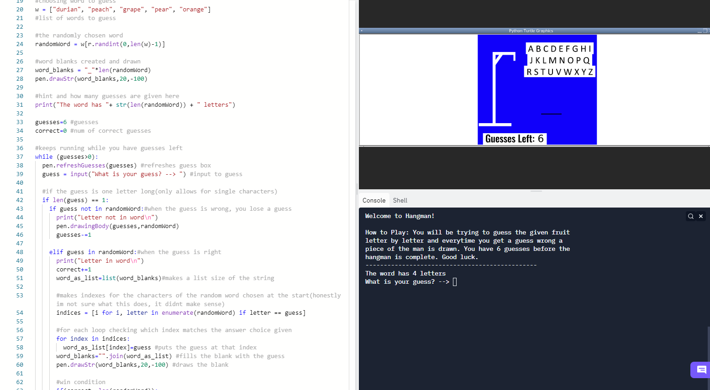
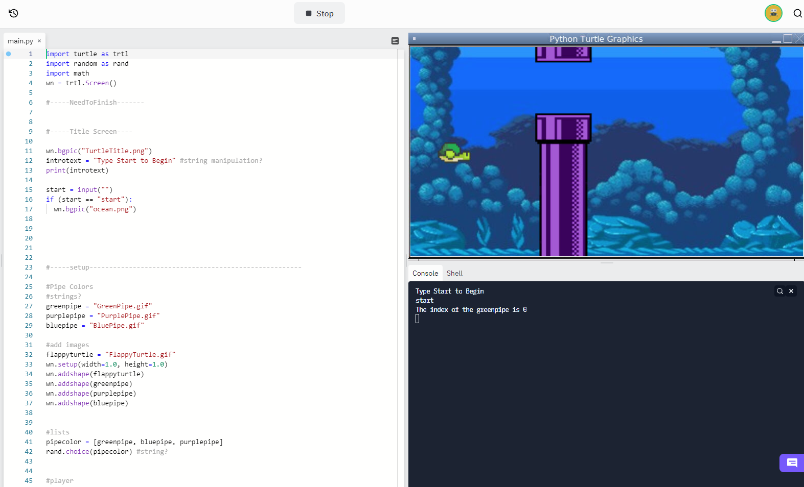
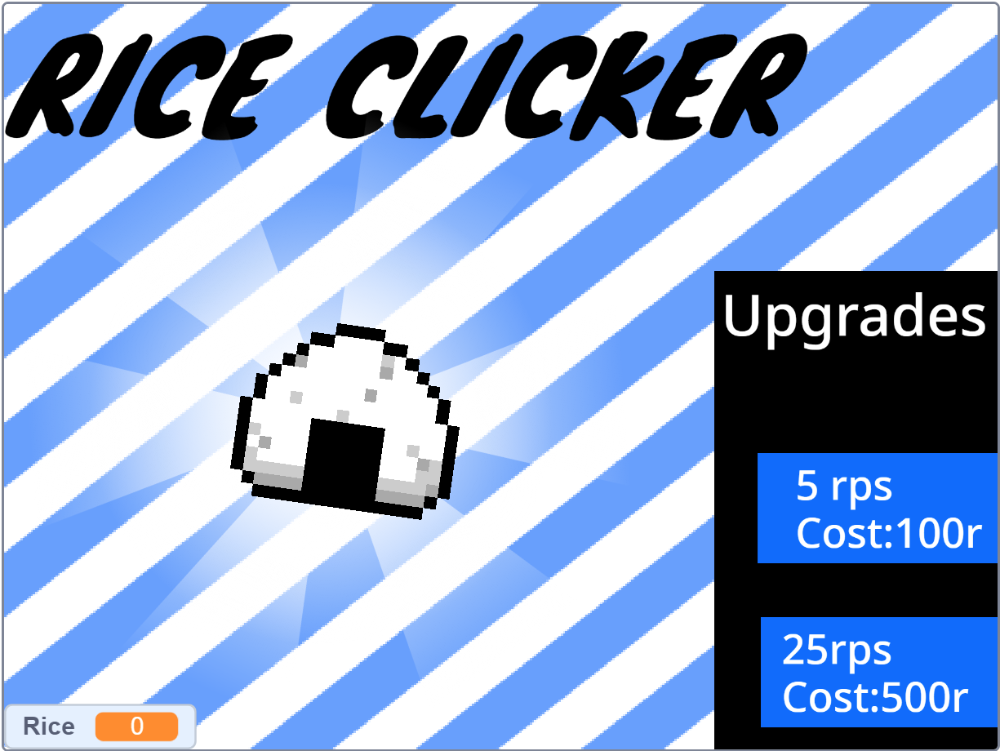

Home
Portfolio
About Me
This is my Portfolio Page!

For our first project we designed a hangman game which included a list of fruits as the words to be guessed. The game ran typically the same as actual hangman although at the end there was a winning and losing animation. We used a while loop that would until there you had zero guesses left. We had if statements nested within the while loop that determined what would happen if a letter was guessed correcty or incorrectly.

For our 1.2.5 project we decided to create a game that emulated the iconic Flappy Bird game. Although our game differed as our player was a turtle that could travel downwards or upwards using the keys 'W' and 'S'. Our project utilized functions, data storage, and abstraction.

For our scratch project we decided to create a typical clicker game. The goal of our game was to gather the highest amount of rice through a series of clicks and upgrades which could be earned through purchases with rice as the currency.